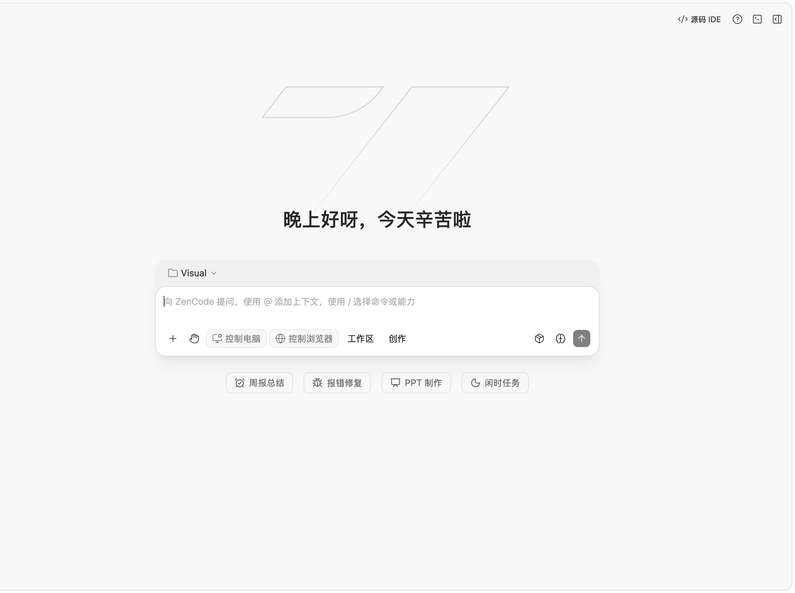

源码 IDE 与本地工作区
IDE 内含文件浏览、编辑、搜索、Git、终端和扩展入口。选中文本或拖入文件引用即可把工作区上下文带进对话。IDE 用于本机工作区。
DESKTOP · 3.14.32
ZenCode 将源码 IDE、AI 对话、多 Agent 任务、创作工具和桌面控制放在一起。文件留在本机工作区，模型通过 ZenMux 调用。

最新版本
本版移除插件市场卡片与详情标题上的“编程套餐”徽标。套餐元数据和插件权限逻辑保持不变。
产品能力
ZenCode 展示当前版本已提供的能力。具体操作会根据平台、权限和工作区类型显示。
IDE 内含文件浏览、编辑、搜索、Git、终端和扩展入口。选中文本或拖入文件引用即可把工作区上下文带进对话。IDE 用于本机工作区。
在任务区组织并跟进多个 Agent 工作。可配置独立调度模型，为新任务选择执行模型；续接任务沿用当前模型。调度器不会自动把一个任务拆成多个子 Agent。
模型切换使用同一会话已提交的对话历史，未发送草稿不会被带入。发送时可附上当前文件、可见 Diff、终端、预览和 Git 摘要。
复杂任务可以报告阶段进度，并先列出候选文件供用户勾选。确认后，无法验证写入范围的工具调用会被拒绝，既有权限检查继续生效。
桌面控制默认关闭，可手动启用。macOS、Windows 和 Linux 使用各自原生执行器；可用操作取决于系统权限、图形会话和桌面环境。
通过现有微信配对入口连接桌面 Host，在同一任务和会话中查看进度、续接工作并收取文件。账号与工作区权限由运行时校验。
在创作工作区讨论并生成图像、视频和幻灯片。幻灯片可导出为可编辑 PPT、保真 PPT 或 A4 PDF；结果可预览并保存到本地。
通过插件市场安装和管理技能、命令、子智能体及 MCP 服务。IDE 扩展从 Open VSX 或本地 VSIX 安装。
桌面端可连接 SSH 与 WSL 工作区。远程文件操作仍路由到对应工作区，不会因本机没有文件通道而回退到本地执行。
使用桌面应用、浏览器工作区或命令行 TUI、Web、Agent 入口。会话上下文和可用工具受当前连接方式与权限约束。
通过 ZenMux 调用模型。API Key 加密保存在本机；模型用量和费用以 ZenMux 账户为准。
同一会话共享已提交的上下文，帮助避免切换模型时重复组织任务信息。不同供应商之间不保证缓存复用，也不承诺固定 Token 节省比例。
常见问题
ZenCode 连接 ZenMux。你需要自己的 API Key，模型费用由 ZenMux 账户按实际用量结算。
文件保留在对应工作区，API Key 加密保存在本机。模型请求会发送到 ZenMux。
不会。调度模型为新任务选择执行模型；子 Agent 的创建由当前任务和用户控制。
不能保证固定节省。会话可共享已提交历史，但不同模型供应商的缓存策略并不相同。
macOS Apple Silicon、Windows x64/ARM64、Linux x64/ARM64；Linux 提供 DEB 和 RPM。